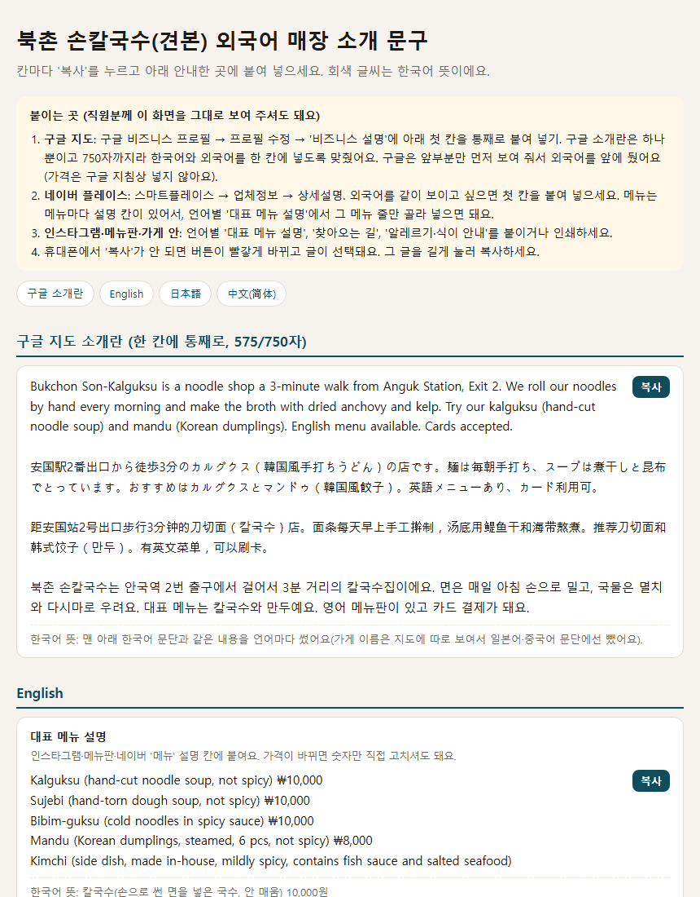

사장님이 보내 준 정보
· 안국역 2번 출구 3분 · 면은 매일 아침 손으로
· 국물: 멸치·다시마 · 카드 됨
A 3-minute walk from Anguk Station, Exit 2. We roll our noodles by hand every morning and make the broth with dried anchovy and kelp.
견본 가게(가상) 소개 문장에서 줄임
가끔 오는 외국인 손님도
메뉴를 바로 이해하게
가끔 오는 외국 손님이 '이게 뭐예요? 매워요?' 물을 때 바로 보여 주세요. 대표 메뉴 5개의 뜻과 맵기, 찾아오는 길, 알레르기 안내를 3개 언어로 정리해 드려요. 구글 지도 소개란에도 그대로 붙일 수 있어요.
39,000원 주문하기해외 결제 서비스 검로드에서 결제해요. 화면이 영어일 수 있고, 가격은 원화로 보여도 실제 결제는 달러로 환산돼 명세 금액이 조금 다를 수 있어요. 가게 정보를 보내기 전이면 전액 환불돼요.
메뉴 이름만 옮기면 안 되는 이유
이름만 옮긴 것Kalguksu 10,000
견본에 들어 있는 문장Kalguksu (hand-cut noodle soup, not spicy) ₩10,000
日本語(견본)カルグクス（韓国風手打ちうどん・辛くない） 10,000ウォン
中文(견본)刀切面（칼국수，手擀面汤，不辣） 10,000韩元
처음 보는 메뉴는 뜻이 있어야 고를 수 있어요. 위 문장은 견본에 들어 있는 그대로이고, 메뉴마다 짧은 뜻 풀이를 붙였어요.
무료 도구와 뭐가 달라요?
무료 외국어 안내 만들기
가게에 붙이는 안내판과 메뉴 QR을 직접 만들어요. 메뉴 이름을 쓰면 사전에 있는 흔한 메뉴만 번역돼요.
가게에 붙이는 안내판과 메뉴 QR을 직접 만들어요. 메뉴 이름을 쓰면 사전에 있는 흔한 메뉴만 번역돼요.
맞춤 소개 문구
지도 앱 소개란에 들어갈 우리 가게만의 소개·자랑거리·찾아오는 길을 3개 언어로 써 드려요.
지도 앱 소개란에 들어갈 우리 가게만의 소개·자랑거리·찾아오는 길을 3개 언어로 써 드려요.
주문 전 확인
가게를 관리하는 구글 계정으로 로그인한 뒤 우리 가게를 검색해 '프로필 수정'이 보이는지 봐 주세요('수정 제안'은 해당하지 않아요). 안 보이면 소유자 인증이 먼저예요. 인증은 사장님 계정으로 직접 하셔야 하고, 받으시는 문서에 구글 공식 순서를 적어 드려요(검토에 최대 5영업일, 엽서는 보통 14일).
가게를 관리하는 구글 계정으로 로그인한 뒤 우리 가게를 검색해 '프로필 수정'이 보이는지 봐 주세요('수정 제안'은 해당하지 않아요). 안 보이면 소유자 인증이 먼저예요. 인증은 사장님 계정으로 직접 하셔야 하고, 받으시는 문서에 구글 공식 순서를 적어 드려요(검토에 최대 5영업일, 엽서는 보통 14일).
받으시는 것
- 구글 지도 소개란용 한 칸: 한국어+영어·일본어·중국어 소개를 구글 소개란 한도(750자) 안에 맞춰 통째로 붙이게(가격 없이, 구글 지침대로)
- 언어마다 대표 메뉴 5개 설명(뜻·맵기·가격, 주재료는 메뉴 설명이나 알레르기 안내에 함께)
- 언어마다 찾아오는 길(역·출구·걸어서 몇 분·찾기 쉬운 표시)
- 언어마다 알레르기·식이 안내(사장님이 주신 재료 그대로, 모르는 건 '직원에게 물어봐 주세요', '모든 원재료가 아닐 수 있어요' 함께)
칸마다 복사 버튼과 한국어 뜻이 있고, 맨 위에 구글·네이버·인스타그램 어디에 무엇을 붙이는지 안내가 있어요. 직원분께 그대로 보여 주셔도 돼요.

진행 순서
- 주문(결제)
- 결제 후 tmdgh930@gmail.com 으로 가게 정보 보내기. 지금 쓰는 메뉴판 사진이나 네이버 플레이스 화면을 보내 주셔도 돼요. 꼭 필요한 건 다섯 가지예요.
- 가게 이름
- 대표 메뉴 5개와 가격, 메뉴별 주재료와 맵기
- 영업시간·쉬는 날
- 가까운 역·출구
- 중국어 간체(중국 손님)·번체(대만·홍콩 손님) 중 하나
- 필요한 정보를 모두 받은 날부터 2일 안에(주말 포함) 메일로 받기
- 납품 후 30일 안에 1회 무료 수정(메뉴·가격·영업시간 변경 포함)
39,000원
영어·일본어·중국어 · 대표 메뉴 5개 · 정보를 다 받은 날부터 2일
주문하기해외 결제 서비스 검로드에서 결제해요. 화면이 영어일 수 있고, 가격은 원화로 보여도 실제 결제는 달러로 환산돼 명세 금액이 조금 다를 수 있어요. 가게 정보를 보내기 전이면 전액 환불돼요.
꼭 알려 드릴 점
- 메뉴판 전체 번역이 아니에요. 대표 메뉴 5개까지예요.
- 지도 앱 등록 대행과 노출 순위 보장은 하지 않아요. 붙여 넣기는 사장님이 직접 해 주세요.
- 전문 번역가·원어민 감수는 포함되지 않아요.
- 알레르기 문구의 최종 확인은 매장에서 해 주세요.
- 받은 가게 정보와 메일은 이 작업에만 쓰고, 납품 후 30일이 지나면 지워요.
- 환불: 가게 정보를 보내시기 전에는 전액 환불해 드려요. 정보를 보내신 뒤에는 맞춤 제작이 시작되어 청약철회(환불)가 제한돼요. 단, 설명과 다르게 납품되면 환불해 드려요.
- 결제는 해외 결제 서비스(검로드)에서 진행돼요. 가격은 원화로 보여도 실제 결제는 달러로 환산돼요. 환율과 카드사 해외 결제 수수료로 명세 금액은 조금 다를 수 있어요.
무료로 쓸 수 있는 것
가게 외국어 안내판과 메뉴 QR은 무료로 직접 만들 수 있어요. 우리 가게 외국어 안내 만들기 · 모든 도구